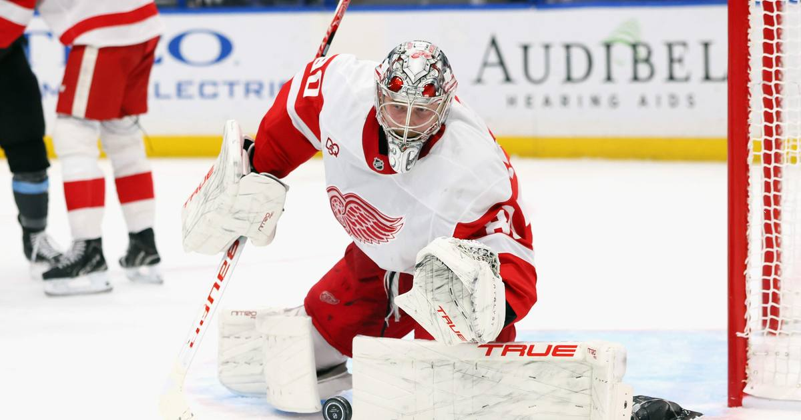

Daniil Tarasov's 31-save shutout ends Tampa's perfect home record — and Detroit's five-game skid
Daniil Tarasov stopped all 31 shots he faced as Detroit blanked Tampa Bay 2-0, handing the Lightning their first home loss of the season and snapping the Red Wings' five-game losing streak in the same night.

Disclosure: this post contains affiliate links. I earn a commission on qualifying purchases.
The night
The Tampa Bay Lightning hadn't lost at home all season. The Detroit Red Wings hadn't won in five games. Something had to give on Saturday night at Benchmark International Arena, and Daniil Tarasov made sure it gave Detroit's way.
Tarasov stopped all 31 shots he faced — including a 13-shot second-period barrage — as the Red Wings blanked the Lightning 2-0, becoming the first club to beat Tampa on home ice in 2026-27 and ending a season-long five-game skid in the process.
"We needed this win," Tarasov said. "It was a tough road trip, and we ended it really strong against a really good opponent."
It was the second shutout of the season for Tarasov, and the third of his NHL career. Both of his shutouts in a Winged Wheel sweater have come in the kind of games Detroit desperately needed: the first came in his first start, Oct. 10 at Montreal, and this one arrived with the Wings at 8-10-3 and sliding.
The sequence
The game turned on 31 seconds in the second period.
First, Tarasov made a no-look paddle save on Jake Guentzel at the left post — a lunging stick save that kept the game scoreless. Then William Wallinder, below the Lightning bench, hit Lucas Raymond in the neutral zone with a pass Raymond settled off his skate, kicked to his stick, and converted on the breakaway at 13:12 for the 1-0 lead.
"It was almost like a pass, but a punt as well," coach Todd McLellan said of Wallinder's feed. "And I thought Lucas did a good job of handling that puck in the air. So, the quarterback threw the ball out in an area and let the receiver go get it."
Raymond later added the assist on Michael Brandsegg-Nygård's empty-net goal at 19:17 of the third, sealing it. The 24-year-old now has eight goals and leads Detroit with 20 points through 21 games.
Tarasov's night was full of that kind of moment. In the first period, John Carlson's one-timer slipped behind him but not over the goal line, and Andreas Englund swept the loose puck away from the blue paint. Late in the second, he denied an open Nikita Kucherov one-timer from the high slot. Tampa outshot Detroit 31-22 and kept coming — nine shots in the final frame — but nothing got through.
"Considering some of the past games where I think we've had those types of efforts and they haven't gone our way, it's good to finally get the carrot," McLellan said. "And like a lot of those other games, good team game starting in the goal."
The stakes
For Tampa, it was the first shutout loss of the season and the end of an eight-game home winning streak. The Lightning fell to 13-5-2, with Andrei Vasilevskiy making 20 saves. For Detroit, it was the difference between coming home empty-handed from a four-game road trip and coming home with something to build on. The Wings will play four of their next five at Little Caesars Arena, starting Wednesday against Boston.
The numbers back up what the eye test said: Tarasov is 3-3-2 in nine appearances this season with a 1.84 goals-against average and a .931 save percentage, and he's given a team that came into the night desperate for relief exactly that. Andrew Copp, who picked up an assist on the empty-netter, played his 800th career NHL game in the win.
"We needed this win," Tarasov said again, because it bore repeating. "It was a tough road trip, and we ended it really strong against a really good opponent."
Gear up: Fanatics